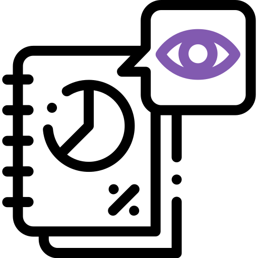
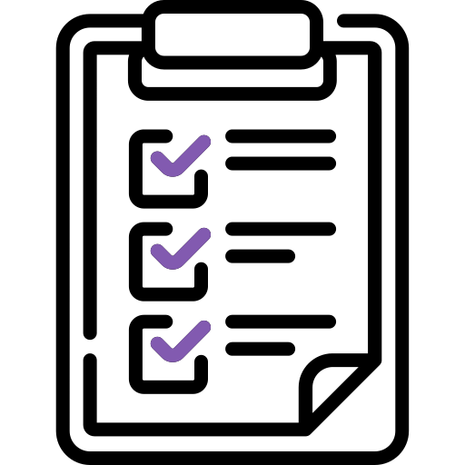
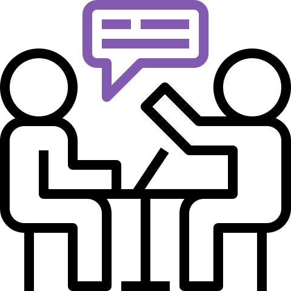
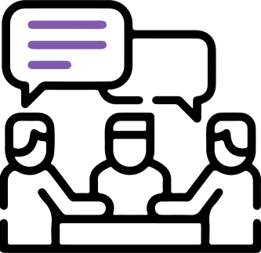
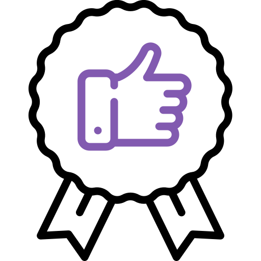
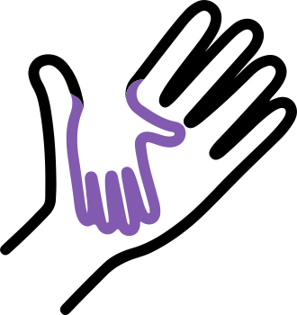

Problem
Northwestern University provided countless of resources to their incoming students to learn about the university, but many students still had trouble adjusting to the new campus life. Northwestern Campus Life realized that their current resources were not working and wanted to create a new solution that allows incoming students to ask questions about the school life, and experienced students to share answers and advice.
Challenge: How might Northwestern Campus Life help incoming students connect with experienced students for answering questions and giving advice about campus life?
Process
For this project, we had to propose an experience that will allow incoming and experienced students to connect, so that incoming students can learn more about the university through inside perspective. Here's how we approached it:
- Current Solution Audit
- Survey
- User Interview
- Personas
- Actionable Insights
- Key Opportunities
- High-level Concepts
- Lo-Fi Wireframes
- Mid-Fi Wireframes
- User Testing
- Iteration
- Hi-Fi Prototype
- Presentation
Research
Synthesize
Design
Prototype & Test
Deliver
Designing NUravel within two weeks.
Research
We conducted an audit of Northwestern's resources for incoming students. We also sent out surveys and talked to Northwestern students about their experience when preparing for school. We were able to learn the needs as both an incoming and experienced student during this process.
-

Resource Audit
Analyzed 3 resources for incoming students
Survey
Distributed online to 13 Northwestern students
User Interview
Conducted 30 minutes sessions with 4 participants
Synthesize
Once we gathered the results from our research, we began to identify what students want in their school preparation and their pain points when using Northwestern's resources. Here were the insights:
Insights
-

Relevant Discussions
Incoming students want to join discussions that are relevant to their needs and connect with current students who can help them
Reliable Guidance
Incoming students want honest perspectives and advices, while also make them feel inclusive and guided
Taking Initiative
Incoming students will proactively look for help if the resources provided to them are not suffice or not relevant to their needs
Design
Based on the insights from our research, we came up with a couple of concepts and decided to go with a discussion app that builds connections between incoming and experienced students as they gear up for school. We called it NUravel and students can:
- Complete an optional survey that will the app to suggest communities that they may be interested to join
- Read, create and comment on posts in different communities
- Determine which information shared by other students are reliable
- Reach out to other students directly for conversations or share contacts
Lo-fi wireframes to show the user flow of NUravel.
When students sign up to NUravel, they will enter their NetID, an electronic identity that contains their personal information and academic records at Northwestern, so the app can verify their status at the university and provide an informative space for all students on the platform, which will be explained more in-depth.
Personalization
Students can take a short survey that will help NUravel to formulate a list of recommended communities, based on their answers, that they may be interested to join as they get started.

Suggest communities that students may be interested joining.
Read, Create and Comment
Students can view posts and read through the comments from any community. However, they can only create and comment on posts in communities that they've joined. This is to ensure that all members in a community are verified and are providing informative discussions.
Read and create posts on NUravel.
Identity and Verification
Using students' NetID, NUravel can calculate how long they have been at Northwestern and display it on their profile. Other students can use that information to see their experience at the university.
Student's time at the university displayed on their profile.
Another layer of reliability can be determined by the student's relationship to the community. When a student joins a community, NUravel looks through their NetID's records to see how the student is related to the community. If there is a connection, the student will have a purple thumbs up within that community to show that they are reliable sources.
Verified students have a purple thumbs up.
Direct Conversations
Students have the option to reach out to other students directly. At the same time, it can be used to make connections by forwarding contacts, so they can reach out to those who are more suitable to answer their questions.

Talk to other students directly and forward contacts.
Usability Testing
We recruited 3 participants to go through our user testing and asked them to complete 6 tasks on our prototype. We discovered that some features are prolonging the experience, so we made these changes:
- Changed from "Create new community" to "Request new community" due to the chaos that will cause by random communities being created
- Added a new list of recommended communities to help new users learn more about the university
- Changed from self-verification to NetID verification due to trust issues with self-reporting
- Reorganized profile information and changed verification indicator from words to symbol for more clarity
Prototype
With all the features completed, we presented the final design to the Northwestern Campus Life committee. Here's how it turned out:
Get connected with current students and learn more about Northwestern University.
Conclusion
The committee loved NUravel and wanted to implement it for future incoming students. However, since the design of NUravel is extremely complicated and we didn't work with a developer throughout the project, it will take time to develop. That being said, I've learned more about storytelling, testing and iterating, and I want to continue it. If I had more time, I would conduct testing with more users and get more feedback on the reliability indicators, because they were the toughest features to design.

User testing with one of the partipicants for NUravel.